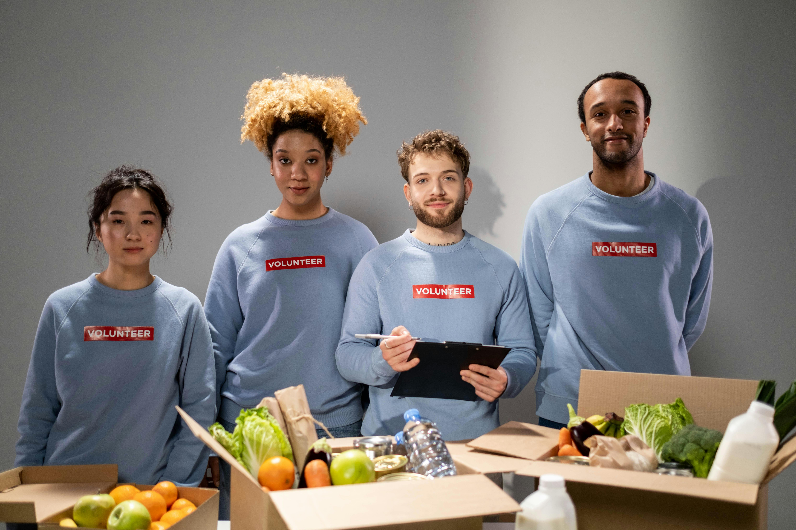
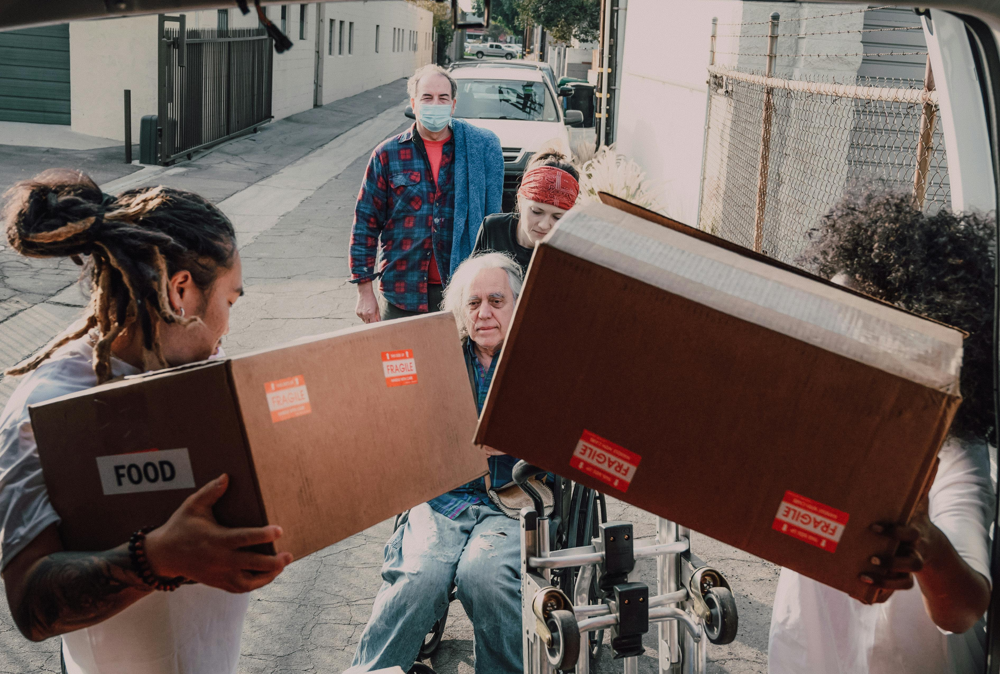

Get Free Groceries — You Deserve It
Smart people use every advantage. This program gives you access to free groceries, fast and hassle-free. No fees. No catch. Just what’s yours.
Apply Now


Smart people use every advantage. This program gives you access to free groceries, fast and hassle-free. No fees. No catch. Just what’s yours.
Apply Now